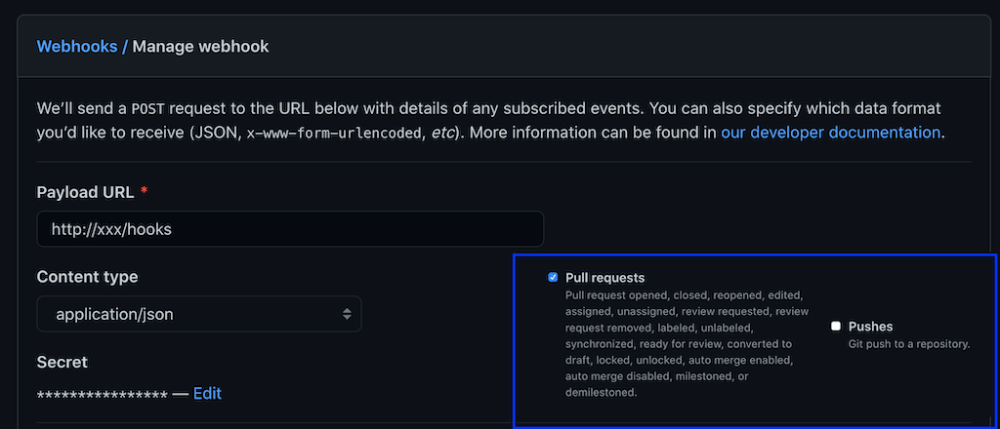

Tutorial: Tekton Triggers with GitHub integration
In a previous blog post we’ve used Tekton Pipelines to set up a simple pipeline that runs tests, builds a docker image and pushes it to a registry.
In this blog post we’re going to take a look at Tekton Triggers and integrate it with GitHub. We’re going to setup a GitHub webhook that will automatically run our pipeline when a GitHub PR is opened or new commits are pushed to an existing PR branch.
All code examples in this blog post are available in a GitHub repo.
Table of contents
- Requirements
- Installation
- Creating a Pipeline
- Creating Resources for Tekton Triggers
- Adding the webhook to Github
- Creating a PR and testing our trigger
- Summary
Requirements
For this tutorial we need a Kubernetes cluster with an ingress-controller installed that can give us an external IP.
We also need a GitHub repository where we can add the webhook.
Installation
Tekton Triggers requires Tekton Pipelines to be installed. We also need to install the core interceptors (GitHub, GitLab, BitBucket, and CEL) manifests as we’ll use them later on.
By default all resources will be installed in the tekton-pipelines namespace.
# Tekton Pipelines
kubectl apply -f https://storage.googleapis.com/tekton-releases/pipeline/previous/v0.23.0/release.yaml
# Tekton Triggers + Interceptors
kubectl apply -f https://storage.googleapis.com/tekton-releases/triggers/previous/v0.13.0/release.yaml
kubectl apply -f https://storage.googleapis.com/tekton-releases/triggers/previous/v0.13.0/interceptors.yamlConfigure RBAC for our Tekton Triggers service account:
kubectl apply -f https://raw.githubusercontent.com/arthurk/tekton-triggers-example/master/01-rbac.yamlCreating a Pipeline
We’re going to use a simple pipeline that clones a Git repo with a Go application in it and runs the tests. The example application can be found at GitHub.
apiVersion: tekton.dev/v1beta1
kind: Pipeline
metadata:
name: github-pr-pipeline
spec:
resources:
- name: source
type: git
tasks:
- name: test
taskRef:
name: test
resources:
inputs:
- name: source
resource: source
---
apiVersion: tekton.dev/v1beta1
kind: Task
metadata:
name: test
spec:
resources:
inputs:
- name: source
type: git
steps:
- name: run-test
image: golang:1.16.3-alpine3.13
workingDir: /workspace/source
command: ["go"]
args: ["test"]Creating Resources for Tekton Triggers
For our project we need to create the following resources:
EventListener: A Kubernetes Service that listens for incoming HTTP requests and executes a Trigger.Trigger: Decides what to do with the received event. Sets a TriggerBinding, TriggerTemplate and Interceptor to run.TriggerBinding: Specifies the data to be extracted from the request and saved as parameters. This data will be passed to the TriggerTemplate.TriggerTemplate: A template of a resource (TaskRun/PipelineRun) to be created when an event is received.Interceptor: Processes an event to do custom validation or filtering
EventListener
An EventListener processes an incoming request and executes a Trigger. Our EventListener looks like this:
apiVersion: triggers.tekton.dev/v1alpha1
kind: EventListener
metadata:
name: github-pr
spec:
serviceAccountName: tekton-triggers-example-sa
triggers:
- name: github-listener
interceptors:
- ref:
name: "github"
params:
- name: "secretRef"
value:
secretName: github-interceptor-secret
secretKey: secretToken
- name: "eventTypes"
value: ["pull_request"]
- ref:
name: "cel"
params:
- name: "filter"
value: "body.action in ['opened', 'synchronize', 'reopened']"
bindings:
- ref: github-pr-binding
template:
ref: github-pr-pipeline-templateAfter receiving the incoming request it will execute the github-listener Trigger. In this case the Trigger is embedded into the EventListener resource rather than specified in a separate resource.
Our github-listener trigger will then make use of Interceptor’s. An Interceptor let’s us validate or modify incoming requests before they trigger a pipeline run. We embed the Interceptor resource rather than putting it into a separate resource manifest.
GitHub Interceptor
The first interceptor we’re running is called github. It’s part of the core interceptors that we installed above. It makes sure that the request:
- has a valid format for GitHub webhooks
- matches a pre-defined secret (that we’ll set later)
- matches the
pull_requestevent type
The github interceptor requires a secret token. This token is set when creating the webhook in GitHub and will be validated by the github interceptor when the request arrives:
apiVersion: v1
kind: Secret
metadata:
name: github-interceptor-secret
type: Opaque
stringData:
secretToken: "1234567"CEL Interceptor
The second interceptor we’re using is called cel and is also included in the core interceptor manifests that we installed above. Interceptors are executed in the order they’re specified. The cel interceptor will run after the github interceptor.
It let’s us specify a CEL filter expression that will be applied to requests.
We’ll apply this filter expression because GitHub pull_request events are sent for every action performed on a pull request (assigned, unassigned, converted_to_draft, …).
For this tutorial we only need to know when a PR was opened, reopened or synchronized (commits pushed to the PR branch). The CEL filter checks the webhook request body.action and filters our any events that don’t match those actions.
TriggerBinding
After the event listener is done validating and modifying the incoming request, we need to extract values from it and bind them to variables that we can later use in our Pipeline. This is what a TriggerBinding is used for.
Our TriggerBinding looks like this:
apiVersion: triggers.tekton.dev/v1alpha1
kind: TriggerBinding
metadata:
name: github-pr-binding
spec:
params:
- name: gitrepositoryurl
value: $(body.repository.clone_url)
- name: gitrevision
value: $(body.pull_request.head.sha)We’re only interested in the followinw two fields which are necessary to clone the repo at a specific revision:
- gitrepositoryurl: the url of the repo to clone (https://…)
- gitrevision: the commit SHA to check out
The parameters are passed to a TriggerTemplate.
TriggerTemplate
A TriggerTemplate is responsible for dynamically generating a resource. In our case it’s a PipelineRun.
The TriggerTemplate receives the two variables from the previously created TriggerBinding and makes them available under spec.resourcetemplates.
apiVersion: triggers.tekton.dev/v1alpha1
kind: TriggerTemplate
metadata:
name: github-pr-pipeline-template
spec:
params:
- name: gitrevision
description: The git revision (SHA)
default: master
- name: gitrepositoryurl
description: The git repository url ("https://github.com/foo/bar.git")
resourcetemplates:
- apiVersion: tekton.dev/v1beta1
kind: PipelineRun
metadata:
generateName: github-pr-pipeline-run-
spec:
pipelineRef:
name: github-pr-pipeline
resources:
- name: source
resourceSpec:
type: git
params:
- name: revision
value: $(tt.params.gitrevision)
- name: url
value: $(tt.params.gitrepositoryurl)Note that to access variables from a triggertemplate inside a resourcetemplate they need to be prefixed with $tt.
Ingress
For GitHub to be able to send a request to our event listener we need to expose it by creating an Ingress resource and pointing it to our event listener service:
apiVersion: networking.k8s.io/v1
kind: Ingress
metadata:
name: ingress-resource
annotations:
kubernetes.io/ingress.class: nginx
nginx.ingress.kubernetes.io/ssl-redirect: "false"
spec:
rules:
- http:
paths:
- path: /hooks
pathType: Exact
backend:
service:
name: el-github-pr
port:
number: 8080An EventListener will create a service with the el- prefix followed by the name of the event-listener. Our event-listener is named github-pr, so the EventListener Service is named el-github-pr. EventListener services will always use port 8080.
Make sure to note the external IP address of your ingress. In this example it’s 123.123.1.1:
kubectl get ingress
NAME CLASS HOSTS ADDRESS PORTS AGE
ingress-resource <none> * 123.123.1.1 80 26dWe can now send GitHub webhook requests to http://123.123.1.1/hooks and automatically trigger a PipelineRun.
Adding the webhook to Github
In your GitHub repo go to Settings -> Webhooks and click Add Webhook. The fields we need to set are:
- Payload URL: Your external IP Address from the Ingress with
/hookspath - Content type:
application/json - Secret:
1234567
Under events select Let me select individual events. Uncheck Pushes and check Pull requests.

After saving the webhook, GitHub will send a ping event. It will be filtered out by our Interceptor which only allows pull_request events, but we can check the EventListener Pod logs to verify it:
kubectl get pods | grep el-github-pr
el-github-pr-7df7f66d57-kqd6k 1/1 Running 0 13s
kubectl logs el-github-pr-7df7f66d57-kqd6k
...
{
"level": "info",
"ts": "2021-05-01T08:48:59.461Z",
"logger": "eventlistener",
"caller": "sink/sink.go:240",
"msg": "interceptor stopped trigger processing: rpc error: code = FailedPrecondition desc = event type ping is not allowed",
"knative.dev/controller": "eventlistener",
"/triggers-eventid": "f43a88c2-a462-47c9-a6cd-f98de681da40",
"/trigger": "github-listener"
}Creating a PR and testing our trigger
Let’s test that everything works by creating a PR, either manually or using the GitHub CLI:
git switch -c webhook-test
git commit --allow-empty -m "trigger webhook"
gh pr create -fAnd checking for a PipelineRun to get created:
kubectl get pr
NAME SUCCEEDED REASON STARTTIME COMPLETIONTIME
github-pr-pipeline-run-qfvsx True Succeeded 73s 44sWe can see that everything worked. The pipeline was triggered and the run succeeded.
Summary
In this tutorial we used Tekton Pipelines and Tekton Triggers to automatically trigger a pipeline run when a GitHub PR is created or commits have been pushed to its branch.
We setup a GitHub webhook that will send a Pull Request event to our Kubernetes Ingress controller where it is passed on to the EventListener Service. The service will use Interceptors to validate and filter the webhook payload. The validated payload is passed to the TriggerBinding which will extract data from the webhook request and map it to parameters. Lastly the TriggerTemplate will populate a PipelineRun manifest with those parameters and create the resource, which will then be picked up by Tekton Pipelines and processed.
To improve our pipeline futher we could send the status of the pipeline (pending, running, failed) back to github, which will then display it in the web UI. There’s a Task for that in the Tekton Catalog which is easy to integrate. Or maybe we could add a comment to the PR with more detailed information.
Tekton Triggers is still in alpha phase and things change very frequently. You can keep up with the development of the project by checking the the Triggers repo for code changes and the Community repo for feature proposals and discussion around them.
If you spot any mistakes in this blog post please let me know via email.